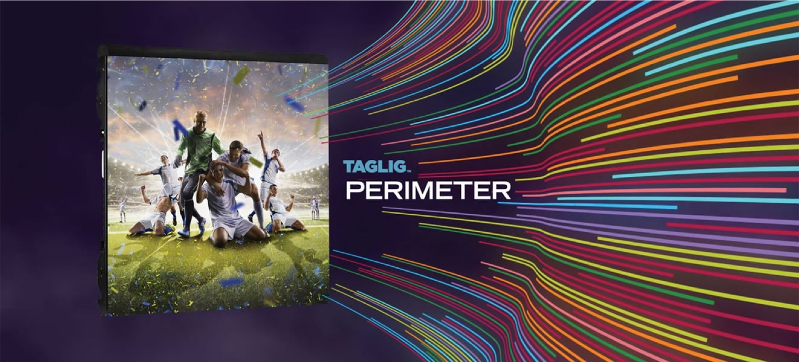

Displays
Choosing an LED scoreboard for a stadium

LED Scoreboard Selection Criteria in Stadiums – TAGLIG Manufacturer & idCodeX Technology Solutions Integrator
In modern sports events, LED scoreboards are no longer just devices for displaying scores. They play a critical role in fan engagement, advertising revenue, broadcast quality, and the overall branding of the stadium.
Choosing the right LED scoreboard is a strategic decision that involves long-term performance, durability, integration, and service reliability.
Here, TAGLIG stands out as a high-quality LED manufacturer, while idCodeX Technology Solutions acts as a professional integrator, providing stadiums with a seamless and fully functional technology solution.
1. Image Quality & Resolution
With varied viewing distances across stadiums, image quality is paramount.
TAGLIG provides modular options such as P8, P10, and P12 suitable for stadium use.
Brightness ranges from 6,000 to 8,000 nits, ensuring visibility even under direct sunlight.
Accurate color reproduction and high contrast are guaranteed at the manufacturing stage.
idCodeX ensures the LED panels are optimally configured for the stadium, delivering clear visuals for both live audiences and TV broadcasts.
2. Size & Positioning
The location of the scoreboard directly affects visibility and functionality.
idCodeX Technology Solutions:
- Customizes TAGLIG panels according to stadium architecture
Ensures proper installation for end zones, stands, corner panels, and 360° wrap-around displays
This guarantees clear and uninterrupted views from all angles.
3. Durability & Outdoor Protection
TAGLIG LED modules are designed for outdoor stadium conditions:
- IP65 front, IP54 back protection
- UV-resistant enclosures
- Heat management system
- High impact resistance
- idCodeX ensures safe power distribution, secure mounting, and overall system longevity.
4. Refresh Rate
High refresh rates are essential for broadcast-quality imaging.
TAGLIG panels feature a minimum 3,840 Hz refresh rate, with options up to 7,680 Hz
idCodeX integrates these panels with broadcasting systems for flicker-free visuals
5. Stadium System Integration
A scoreboard’s effectiveness depends on full integration with the stadium’s operational systems.
idCodeX Technology Solutions integrates TAGLIG displays with:
- VAR and broadcast systems
- Score management software
- Ticketing platforms
- Stadium control rooms
- Advertising and animation content
- Emergency announcement systems
- This creates a unified, high-performance digital ecosystem.
6. Energy Efficiency
TAGLIG’s low-power LED modules and efficient power supplies reduce operational costs.idCodeX implements automatic brightness control and power optimization for maximum energy efficiency.
7. Safety & Certifications
TAGLIG production standards:
- CE, RoHS, EMC certified
- Fire-resistant cabling and modules
- Compliance with UEFA/FIFA technical requirements
idCodeX provides professional installation, structural safety, and commissioning in accordance with international standards.
8. Software & Operation
TAGLIG software supports:
- Multiple sports modes
- Advertising scheduling
- Real-time data integration
- idCodeX ensures smooth operation across stadium management systems.
9. Service, Warranty & Spare Parts
TAGLIG quality ensures long lifespan, while idCodeX Technology Solutions provides:
- 24/7 technical support
- On-site service
- Ready spare parts
- Extended warranty options
- Conclusion: The Right Combination – TAGLIG + idCodeX
- Choosing a stadium LED scoreboard is a strategic, operational, and commercial decision.
TAGLIG’s high-quality manufacturing combined with idCodeX Technology Solutions’ professional integration expertise delivers:
✔ Clearer visuals✔ Longer lifespan✔ Minimal downtime✔ Lower energy costs✔ Enhanced advertising management✔ Professional digital infrastructure